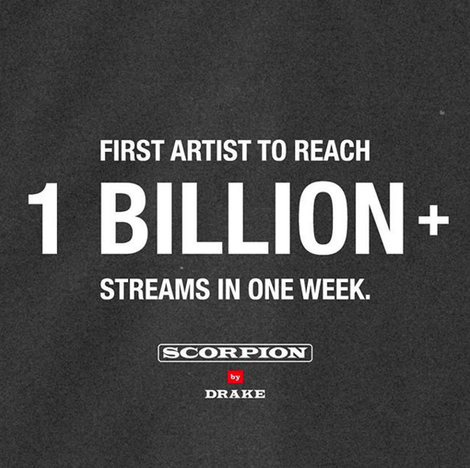

Justin Bieber and Hailey Baldwin are ENGAGED!
According to TMZ, two women claim the engagement went down at a resort in the Bahamas. They say everyone was a restaurant on the dance floor when Justin’s security told everyone to put their phones away because something special was about to happen.
Justin and Hailey have been dating for about a month, however, the two have dated in the past. Earlier this year Justin hooked back up with his ex Selena Gomez, but he later rekindled things with Hailey after he and Selena ended things.
Kylie Jenner got rid of her lip fillers and we're HERE FOR IT!
No information as to why.. But we are LIVING for this healthier-ish look!
Drake is the first artist to reach 1 Billion + streams in one week! #SCORPIONSZN

Scorpion earned Drake his 8th consecutive number one debut, which now ties him with Eminem and Kanye West with the second most number one albums by a rap solo artist!